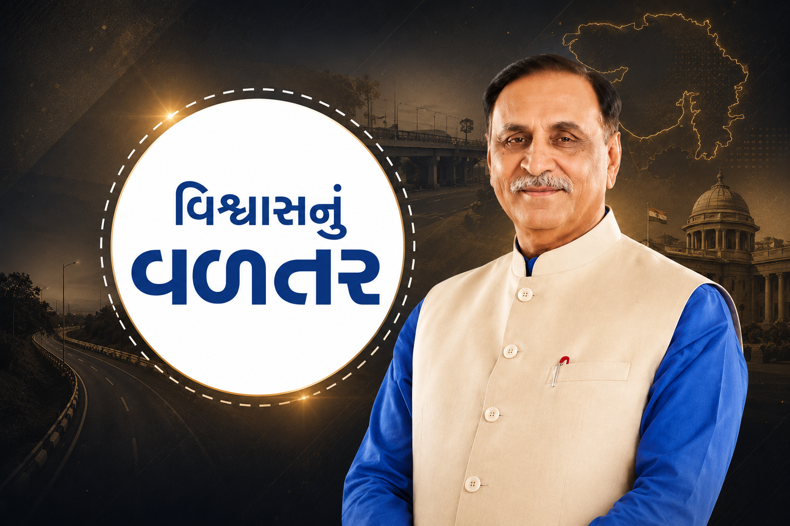
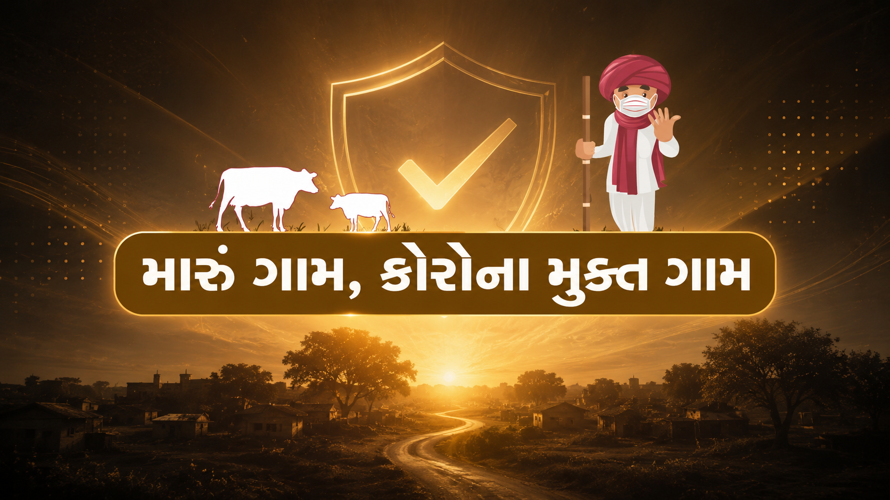
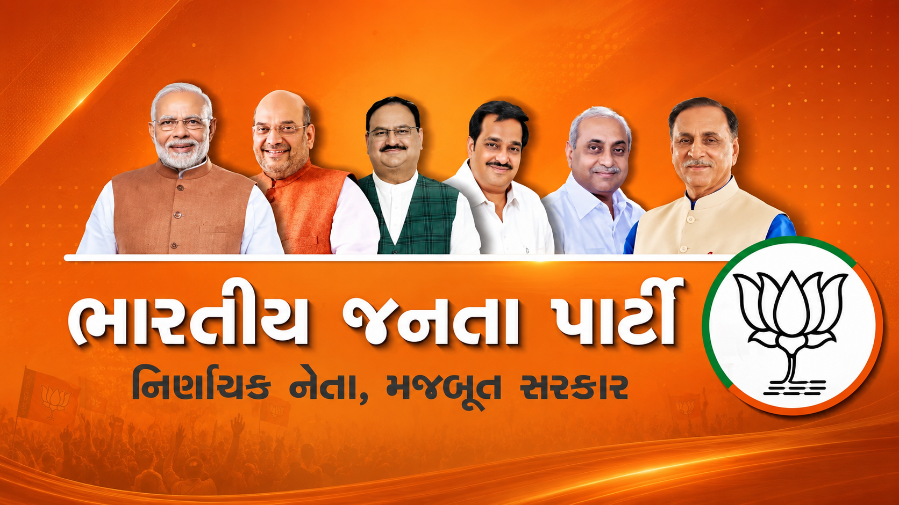
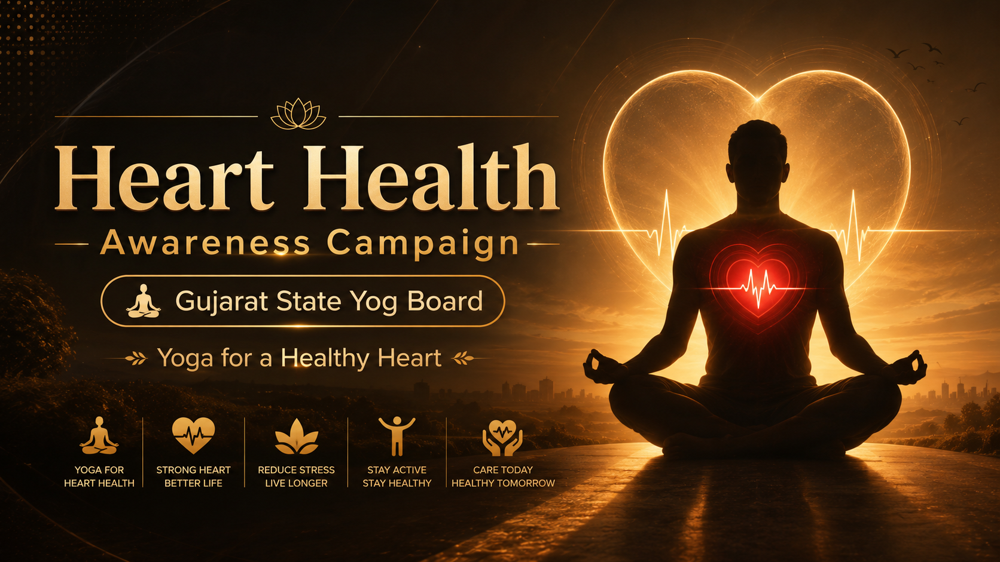

Vishwasnu Valtar
Writer & Executive ProducerGovernment video series featuring more than 100 beneficiary success stories, transforming real-life experiences into impactful public communication.
Watch Project →Government communication transforms public initiatives into meaningful visual stories through documentaries, awareness campaigns and citizen-centric storytelling.
A selection of documentaries, public awareness campaigns, healthcare communication films and citizen-centric storytelling projects created for various Government initiatives.

Government video series featuring more than 100 beneficiary success stories, transforming real-life experiences into impactful public communication.
Watch Project →Scripted more than 70 government communication episodes highlighting public welfare schemes, development initiatives and citizen awareness.
Watch Project →
Government COVID-19 awareness campaign developed through field research, interviews and rural healthcare storytelling.
Watch Project →
Worked as Script Supervisor, ensuring narrative consistency, message clarity and effective political communication throughout the campaign films.
Watch Project →Developed documentary-style healthcare communication through scripting, interviews, field coordination and awareness-driven visual storytelling during COVID-19.
Watch Project →
Documentary concept and script highlighting Gujarat's urban transformation, infrastructure development, citizen-focused initiatives and sustainable growth.
Watch Project →Whether it's a documentary, awareness campaign, public communication film or citizen engagement initiative, let's work together to transform ideas into impactful stories.
Let's Discuss Your Project